New album · November 20, 2026
HARVEST
Twelve songs about what you plant and what comes up.
Storm light over a cracked field, a back road at dusk, a match struck in a dark kitchen. HARVEST is weathered, honest rock with dirt under its nails: swaggering blues that drifts into a warm, hazy shimmer, then snaps back hard enough to rattle the windows.
It closes the way these songs were meant to be heard, with GET IT RIGHT (LIVE) and a crowd shouting every word back.
Track list
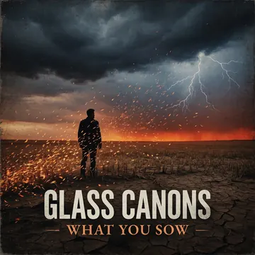
01WHAT YOU SOW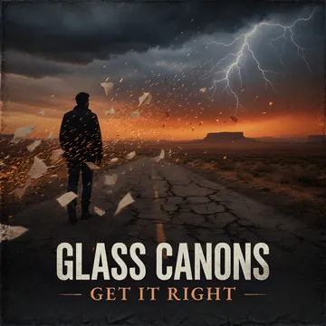
02GET IT RIGHT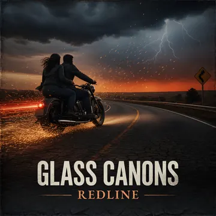
03REDLINE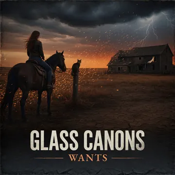
04WANTS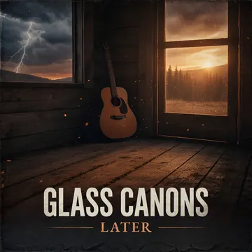
05LATER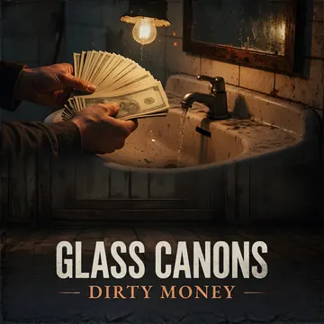
06DIRTY MONEY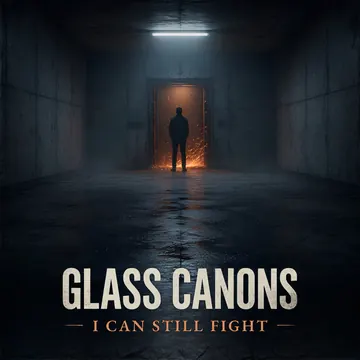
07I CAN STILL FIGHT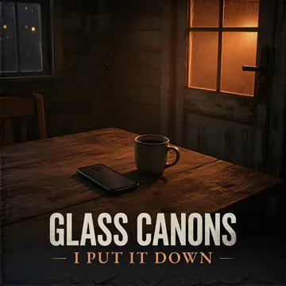
08I PUT IT DOWN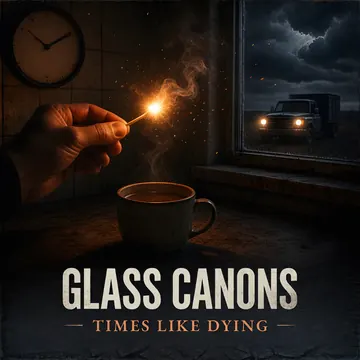
09TIMES LIKE DYING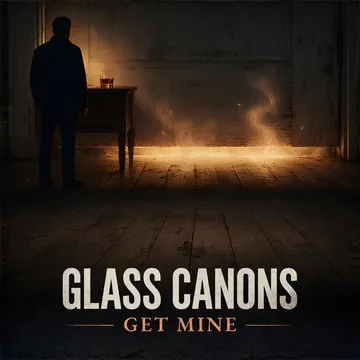
10GET MINE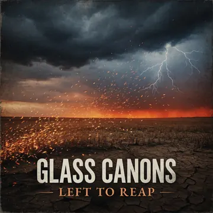
11LEFT TO REAP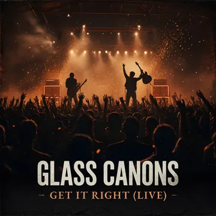
12GET IT RIGHT (LIVE)
Listen
Single · Out now
GET IT RIGHT
The first taste of HARVEST, plus GET IT RIGHT (LIVE) with the crowd shouting it back.
More from GLASS CANONS
Everything is on Apple Music.
About
GLASS CANONS play heartland garage-blues with a neo-psychedelic haze.
Think of a summer storm rolling over open farmland: the air goes heavy, the light turns gold and strange, and then it breaks. The songs hit with the grit of a garage band, then open up into something dreamier and wider, like heat coming off a long road.
The story runs back to the 2016 album TATTERS AND TETHERS. Now comes HARVEST, out November 20, 2026: songs with names like DIRTY MONEY, I CAN STILL FIGHT and LEFT TO REAP, made for long drives with the windows down and the sky going dark on the horizon.
GLASS CANONS is on Bridge Recording, Zoe, Oklahoma.